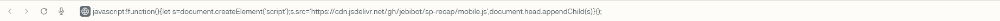

🚨 SOOP 리캡 이용 방법

1. 아래 [🚀 리캡 시작하기] 버튼을 누르면 코드가 자동으로 복사됩니다.
2. 새 탭으로 열리는 SOOP 통계 페이지의 주소창을 클릭하세요.
3. 복사한 코드를 [붙여넣기] 하세요.

4. 중요: 붙여넣으면 'javascript:'가 사라질 수 있습니다! 맨 앞에 직접 javascript:를 입력하고 엔터를 누르세요.
1. 아래 [🚀 리캡 시작하기] 버튼을 누르면 코드가 자동으로 복사됩니다.
2. 새 탭으로 열리는 SOOP 통계 페이지의 주소창을 클릭하세요.
3. 복사한 코드를 [붙여넣기] 하세요.

4. 중요: 붙여넣으면 'javascript:'가 사라질 수 있습니다! 맨 앞에 직접 javascript:를 입력하고 엔터를 누르세요.